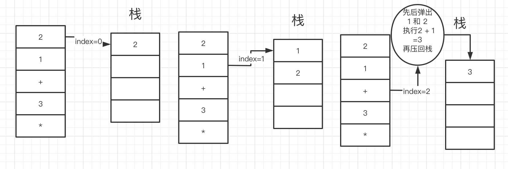
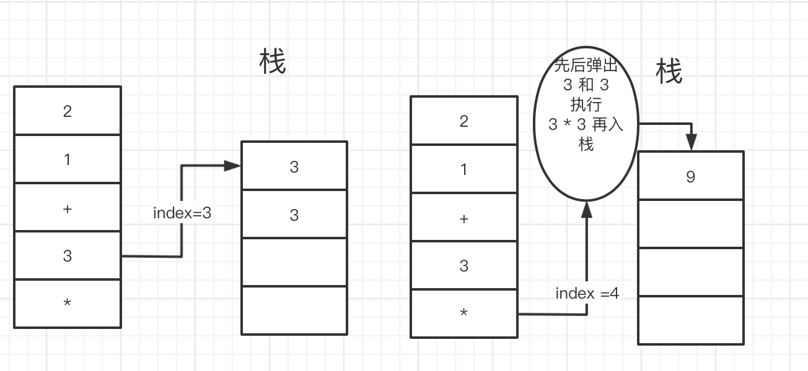
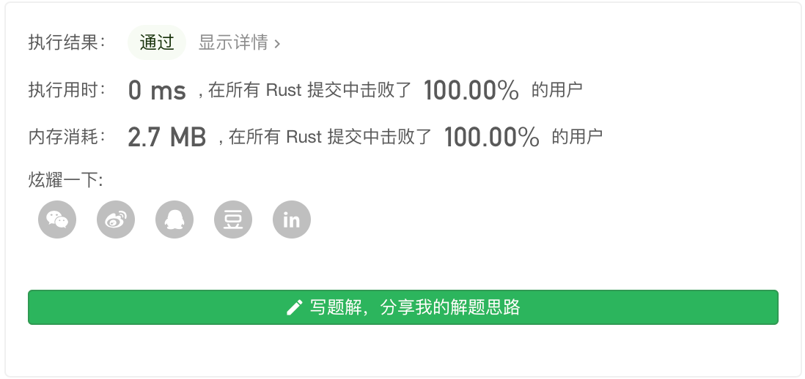

Leetcode 第150题 逆波兰表达式求值
根据 逆波兰表示法，求表达式的值。
有效的运算符包括 +, -, *, / 。每个运算对象可以是整数，也可以是另一个逆波兰表达式。
说明：
- 整数除法只保留整数部分。
- 给定逆波兰表达式总是有效的。换句话说，表达式总会得出有效数值且不存在除数为 0 的情况。
示例 1：
输入: ["2", "1", "+", "3", "*"] 输出: 9 解释: 该算式转化为常见的中缀算术表达式为：((2 + 1) * 3) = 9
示例 2：
输入: ["4", "13", "5", "/", "+"] 输出: 6 解释: 该算式转化为常见的中缀算术表达式为：(4 + (13 / 5)) = 6
示例 3：
输入: ["10", "6", "9", "3", "+", "-11", "", "/", "", "17", "+", "5", "+"] 输出: 22 解释: 该算式转化为常见的中缀算术表达式为： ((10 * (6 / ((9 + 3) * -11))) + 17) + 5 = ((10 * (6 / (12 * -11))) + 17) + 5 = ((10 * (6 / -132)) + 17) + 5 = ((10 * 0) + 17) + 5 = (0 + 17) + 5 = 17 + 5 = 22
逆波兰表达式：
逆波兰表达式是一种后缀表达式，所谓后缀就是指算符写在后面。
- 平常使用的算式则是一种中缀表达式，如
( 1 + 2 ) * ( 3 + 4 )。 - 该算式的逆波兰表达式写法为
( ( 1 2 + ) ( 3 4 + ) * )。
逆波兰表达式主要有以下两个优点：
- 去掉括号后表达式无歧义，上式即便写成
1 2 + 3 4 + *也可以依据次序计算出正确结果。 - 适合用栈操作运算：遇到数字则入栈；遇到算符则取出栈顶两个数字进行计算，并将结果压入栈中。
解题思路
这道题目,看起来好像挺麻烦的,但实际上 只要充分了解 栈的特性就很简单了,波兰表达式 应该是编译原理 里面的知识,可以用来实现一些语法解析 然后用栈 模拟进行计算,可以用来实现脚本语言。
 如上图 所以 我们要借助 一个数组当做栈 来处理数据。
#[macro_export] macro_rules! pop { ($name:expr) => { $name.pop().unwrap() }; } pub fn eval_rpn(tokens:Vec<String>) -> i32 { let mut stack:Vec<i32> = vec![]; for i in 0..tokens.len(){ let token = tokens[i].clone(); match token { _ if token == "+" => { let first = pop!(stack); let second = pop!(stack); stack.push(second + first); }, _ if token == "-" => { let first = pop!(stack); let second = pop!(stack); stack.push(second - first); }, _ if token == "*" => { let first = pop!(stack); let second = pop!(stack); stack.push(second * first); }, _ if token == "/" => { let first = pop!(stack); let second = pop!(stack); stack.push(second/ first); }, //如果是一个number 压栈 _ => { stack.push(token.parse::<i32>().unwrap()) } } } pop!(stack) } fn main() { let mut m:Vec<String> =Vec::new(); m.push("2".parse().unwrap()); m.push("1".parse().unwrap()); m.push("+".parse().unwrap()); m.push("3".parse().unwrap()); m.push("*".parse().unwrap()); let len = m.len()-1; println!("{:?}",m); let res = eval_rpn(m); println!("{}",res); }
时间复杂度：O (n)
空间复杂度：O (n)
